The most important thing I learned about in this event is I learned more cultures of the Filipinos like wearing barong. I can apply this to real-life situations by wearing barong on fancy occasions like graduation, moving up ceremonies, and many more, to showcase the culture of the Philippines. I didn't participate that much because I did not join the contests, but I did cheer for my classmates while wearing barong. If I were to teach this topic to a classmate, I would explain it by saying that this event showcases the true colors of Philippine culture. It is important to have an event like this for Filipino because it gives other people a chance to experience the culture of the Philippines.
The most important thing I learned about the event is anyone can participate. I can apply this to real-life situations by participating on contests. I did not participate much in the event, but I did cheer for our players. If I were to teach this topic to a classmate, I would explain it by saying what they do in the event. It is important to have an event like this because it gives the athletic people a chance to shine.
The most important thing I learned about in this event is it looks harder than it looks. I can apply this in real life situations by placing myself under contestants' shoes to know how hard the things they went through during the contests in science month. I may have not participated actively in the event because I did not join the contests, but I did cheer for our contestants which helped them meet their victory. If I were to teach this topic to a classmate, I would explain it by saying what contestants do on this month. It is important to have an event on this subject because it helps us students grow into a better version of ourselves, specially when our school is called a science high school.
The most important thing I learned in this event is about the United Nations. I can apply this in real-life situations by teaching it to others. I did not participate in the events, but I did cheer for our representatives. If I were to teach this topic to a classmate, I would explain it by saying what they do in the event. It is important to have an event like this for AP because it lets students show their talents when it comes to AP.
The most important thing I learned in this event is that teachers need to be given appreciation for their hard work in teaching their students. I can apply this in real-life situations by expressing gratitude to the people who had cared for us, like our parents and teachers. If I were to teach this topic to a classmate, I would explain how to give thanks. It is important to have an event like this to give thanks to the teachers who were patient when it comes to teaching their students.
The most important thing I learned about the event is anyone can join. I can apply this to real-life situations by joining on contests. I did not participate much in the event, but I did cheer for my classmates who joined. If I were to teach this topic to a classmate, I would explain it by saying what they do in the event. It is important to have an event like this because it gives the athletic people a chance to shine while also having fun.
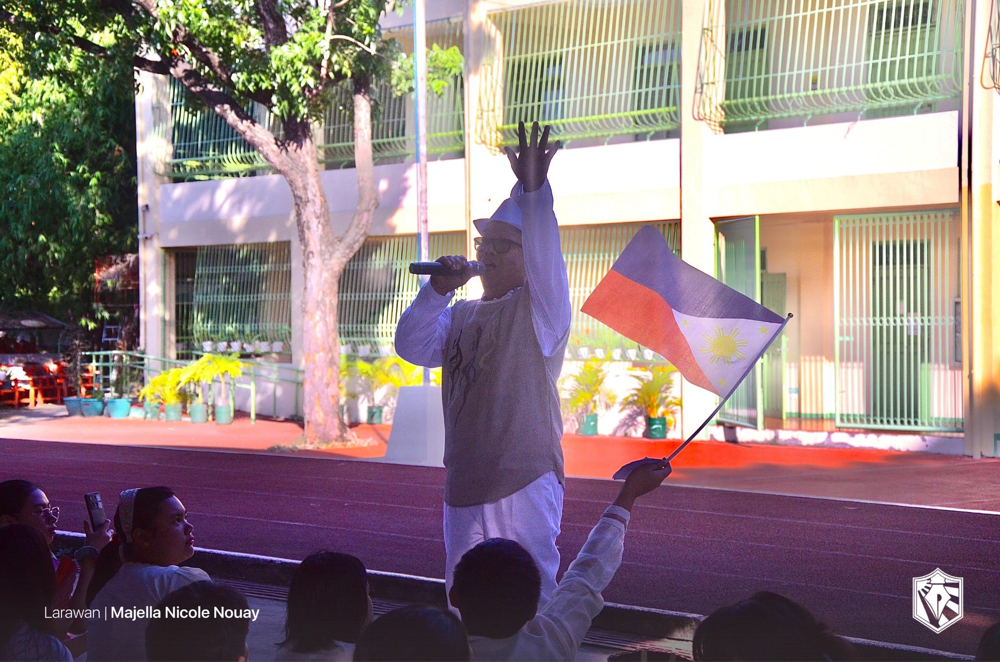
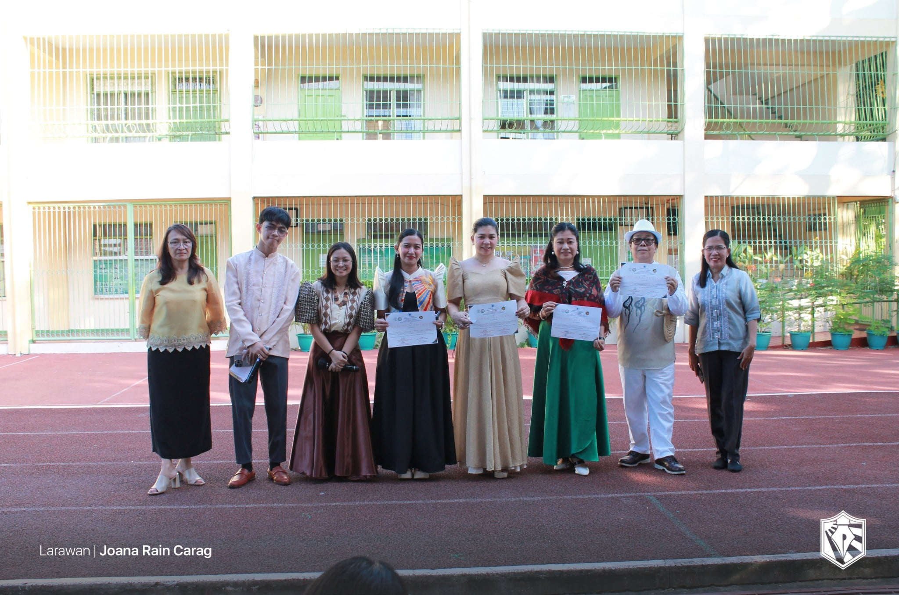
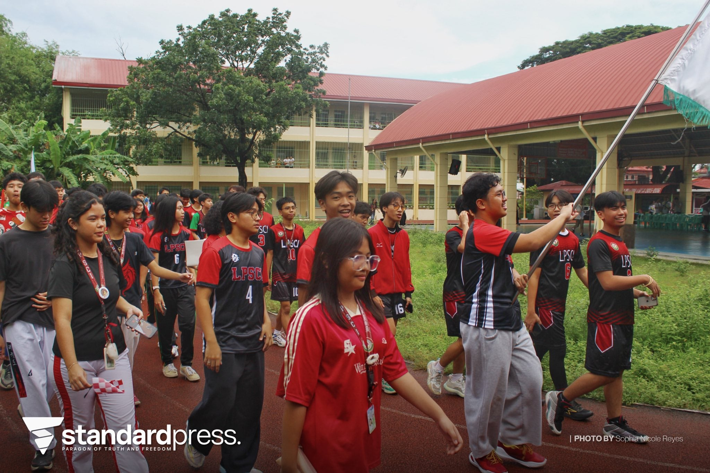
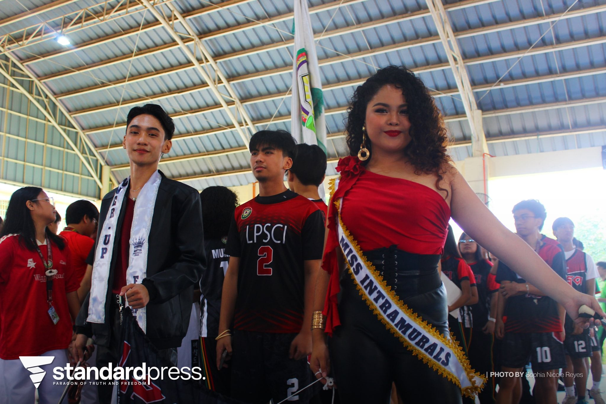
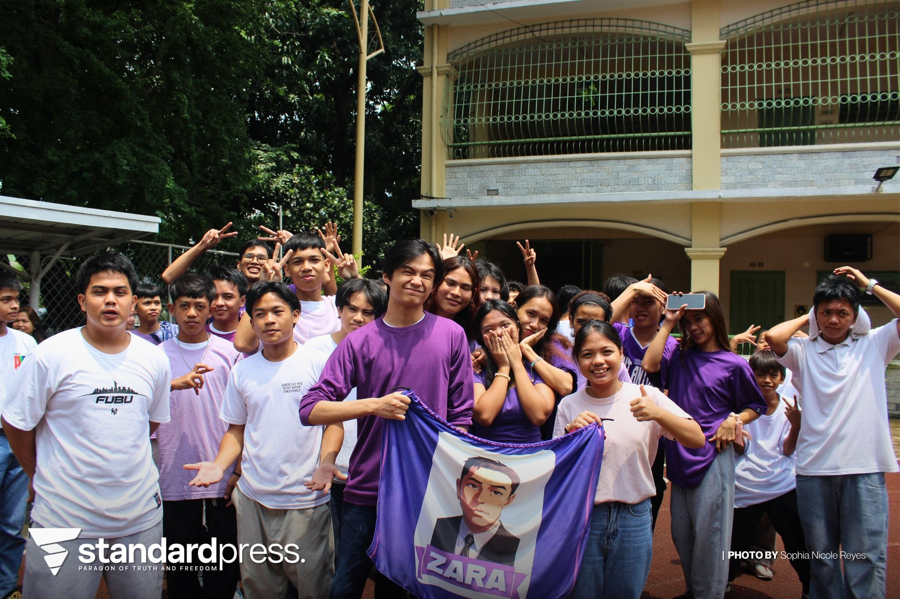
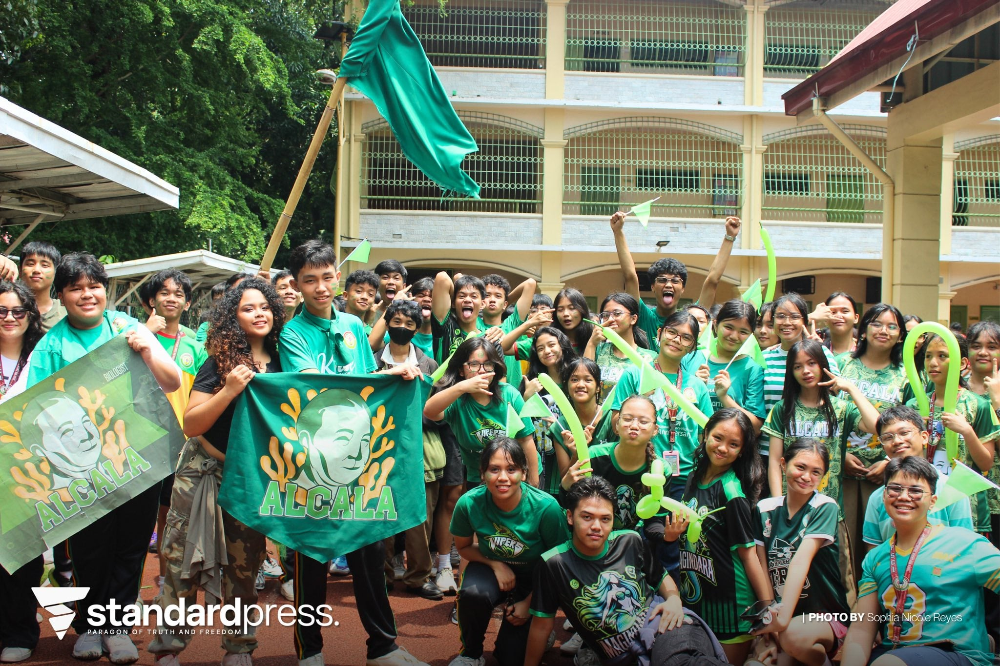
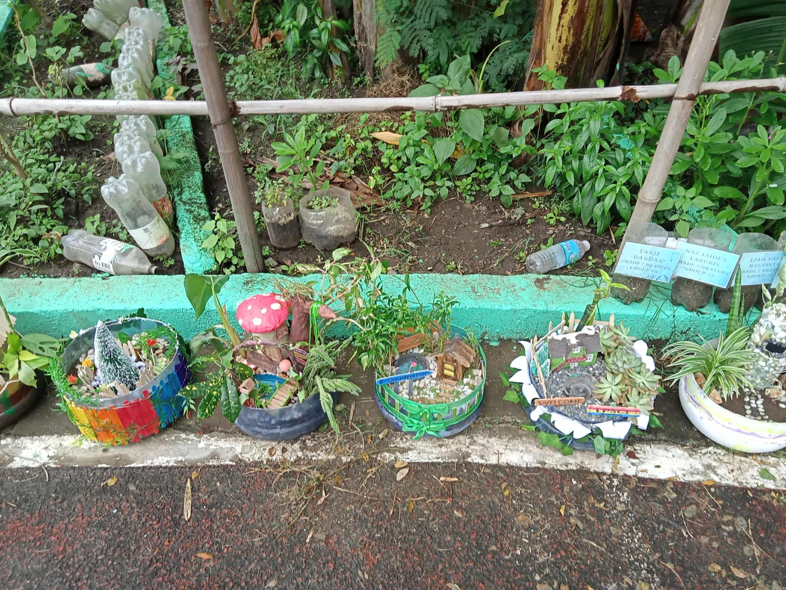
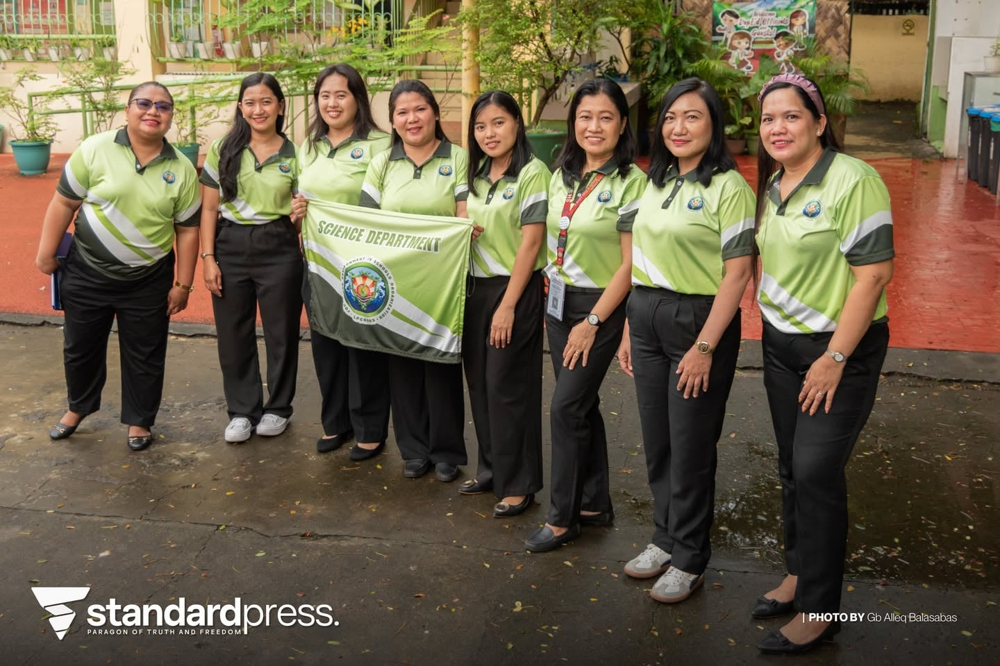
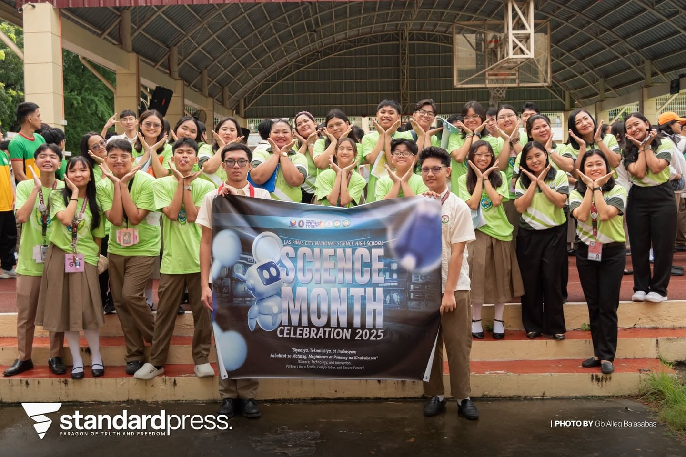
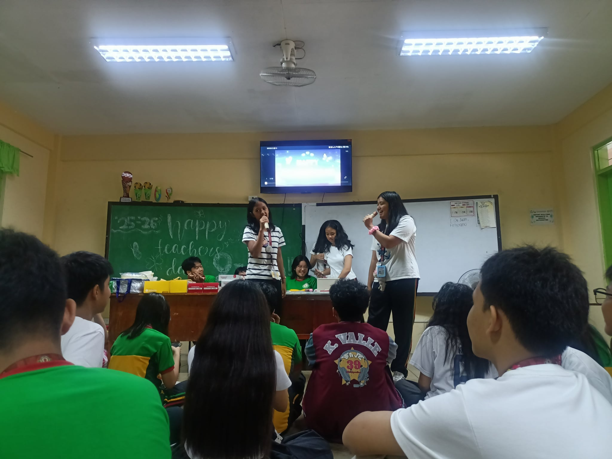
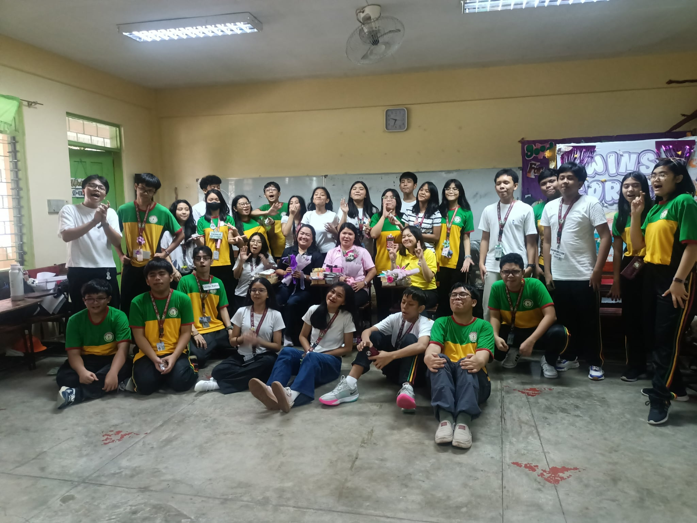